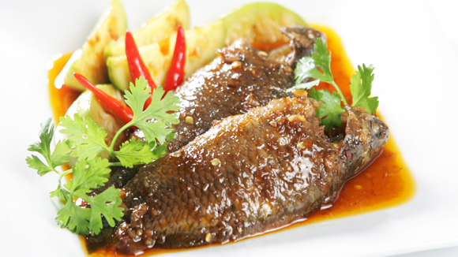

Cá rô kho dưa hường

- Khẩu phần 4
- Chuẩn bị 30 phút
- Thực hiện 25 phút
Nguyên liệu
- 4 con cá rô, làm sạch
- 2 trái dưa hường, gọt vỏ, cắt múi cau
- 3 tép tỏi, đập dập
- 2 nhánh hành lá, đập dập
- 3 trái ớt hiểm, đập dập
- 1 trái dừa xiêm, lấy nước
- 3 muỗng cà phê Hạt nêm từ Nấm và Rong biển
- 1 muỗng canh nước mắm chấm
- 1 muỗng cà phê đường cát trắng
- 3 muỗng cà phê nước màu
- ¼ muỗng cà phê tiêu xay
- 2 muỗng canh dầu ăn
Hướng dẫn thực hiện
- Ướp cá 15 phút với Hạt nêm từ Nấm và Rong biển, nước mắm chấm ,
gia vị và hành, tỏi, ớt.
- Đun nóng dầu ăn cho cá rô vào nồi xào sơ.
- Thêm nước dừa vào nồi, đun sôi lên và kho khoảng 15 phút.
- Cho tiếp dừa hường vào nồi, kho thêm 10 phút nữa cho tất cả nguyên liệu
chín đều và thấm gia vị là được.
- Múc cá kho dưa hường vào tô, rắc tiêu xay và dùng nóng với cơm.